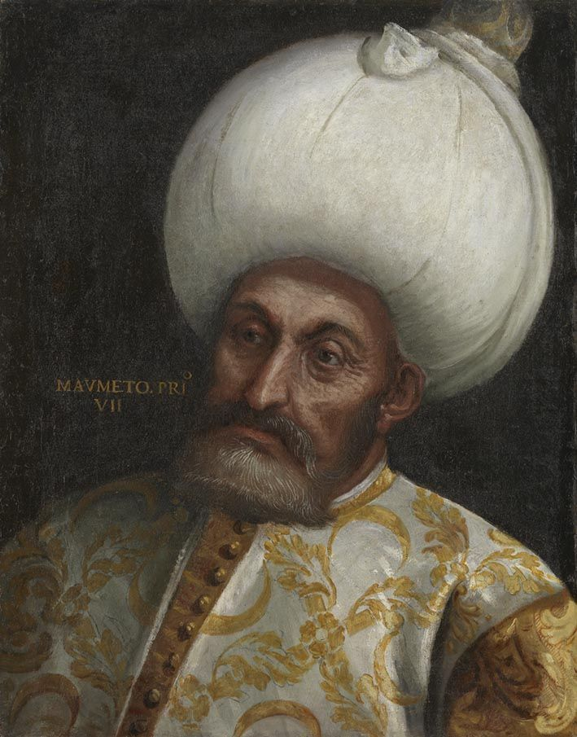

| önceki |  |
sonraki |
I. Mehmed (Çelebi Mehmed), Osmanlı İmparatorluğu'nun beşinci padişahıdır. Babası Yıldırım Bayezid, annesi Devlet Hatun'dur. Fetret Devri'ndeki taht kavgalarını sona erdirip devleti yeniden tek bir merkez altında topladığı için Osmanlı tarihçileri tarafından "Devletin İkinci Kurucusu" olarak kabul edilir.
Saltanatı ve Önemli Olayları
1413 yılında Edirne'de tek başına Osmanlı tahtına geçen I. Mehmed, dağılmış olan Anadolu birliğini yeniden sağlamak için Saruhan, Aydınoğulları ve Karamanoğulları üzerine seferler düzenlemiştir. Döneminde yaşanan en önemli iç karışıklıklar şunlardır:
- Şeyh Bedreddin İsyanı (1420): Sosyo-ekonomik ve dini nitelikli bu isyan bastırılmış, Şeyh Bedreddin Serez'de yakalanarak cezalandırılmıştır.
- Düzmece Mustafa Olayı: Timur tarafından Semerkant'a götürülen kardeşi Mustafa Çelebi'nin Anadolu'ya dönerek hak iddia etmesi üzerine isyan bastırılmış, Mustafa Çelebi Bizans'a sığınmıştır.
- İlk Osmanlı-Venedik Deniz Savaşı (1416): Çalı Bey komutasındaki Osmanlı donanması Venediklilerle savaşmış, denizlerde ilk büyük tecrübeler kazanılmıştır.
Ailesi
- Eşleri:
- Emine Hâtûn - Dulkadiroğlu Nasreddin Mehmed Bey'in kızı, II. Murad'ın annesi.
- Kumru Hâtûn - Selçuk Hatun'un annesi.
- Erkek çocukları:
- II. Murad (1404 – 1451)
- Küçük Mustafa Çelebi (1408 – 1423)
- Mahmud Çelebi (1413 – 1429)
- Yusuf Çelebi (1414 – 1429)
- Ahmed Çelebi (? – 1429)
- Kız çocukları:
- Selçuk Hâtûn (1407 – 1485)
- Sultan Hâtûn (1408 – 1444)
- Hafsa Hâtûn (1410 – 1445)
- İlaldi Hâtûn (1412 – 1444)
- Ayşe Hâtûn (1414 – 1469)
I. Mehmed hakkında daha fazla bilgi için buraya tıklayın.